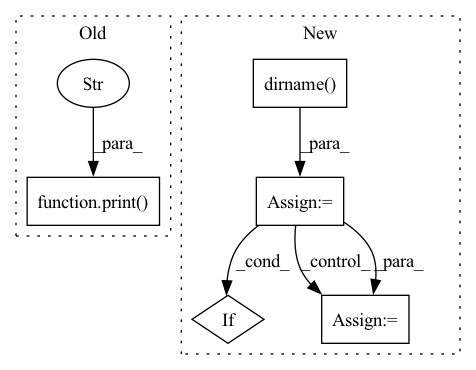

Pattern ID :32075

Before Change
metric_module = metric_module_factory(
path, download_config=download_config, force_local_path=local_path, **download_kwargs
)
print(
f"The processing scripts for metric {path} can be inspected at {local_path}. "
f"The main class is in {metric_module.module_path}. "
f"You can modify this processing scripts and use it with `datasets.load_metric({local_path})`."
)
def get_dataset_infos(
path: str,
After Change
metric_module = metric_module_factory(path, download_config=download_config, **download_kwargs)
builder_cls = import_main_class(metric_module.module_path, dataset=False)
module_source_path = inspect.getsourcefile(builder_cls)
module_source_dirpath = os.path.dirname(module_source_path)
for dirpath, dirnames, filenames in os.walk(module_source_dirpath):
dst_dirpath = os.path.join(local_path, os.path.relpath(dirpath, module_source_dirpath))
os.makedirs(dst_dirpath, exist_ok=True)
// skipping hidden directories; prune the search
dirnames[:] = [dirname for dirname in dirnames if not dirname.startswith((".", "__"))]
for filename in filenames:
shutil.copy2(os.path.join(dirpath, filename), os.path.join(dst_dirpath, filename))
shutil.copystat(dirpath, dst_dirpath)
In pattern: SUPERPATTERN
Frequency: 3
Non-data size: 5
Instances
Fragment ID: 93995480
Project Name: huggingface/datasets
Commit Name: 8239e7968ddcaaf6a9eff9297a5431478c1e0242
Time: 2022-06-09
Author: mariosasko777@gmail.com
File Name: src/datasets/inspect.py
M Class Name: AnonimousClass
N Class Name: AnonimousClass
M Method Name: inspect_metric(3)
N Method Name: inspect_metric(3)
M Parent Class:
N Parent Class:
M File Name: src/datasets/inspect.py
N File Name: src/datasets/inspect.py
M Start Line: 149
M End Line: 153
N Start Line: 162
N End Line: 179
'>
Before Change
num_workers=dataloader_num_workers,
)
print(f"Restoring checkpoint: {model_path}. hparams: {hparams_path}")
tb_logger = pl_loggers.TensorBoardLogger(output_dir)
lr_monitor = pl.callbacks.LearningRateMonitor(logging_interval="step")
After Change
if hparams_path is None:
// Try to find hparams file
model_dir = os.path.dirname(checkpoint_path)
hparamsp = os.path.join(model_dir, "hparams.yaml")
if os.path.exists(hparamsp):
hparams_path = hparamsp
else:
model_dir = os.path.dirname(model_dir)
hparamsp = os.path.join(model_dir, "hparams.yaml")
if os.path.exists(hparamsp):
hparams_path = hparamsp
else:
raise FileNotFoundError(
'>
Fragment ID: 93995486
Project Name: ikergarcia1996/self-driving-car-in-video-games
Commit Name: 33147d0d5eae5cba8373ef40caa91557cea28592
Time: 2021-11-12
Author: igarciaf896@gmail.com
File Name: train.py
M Class Name: AnonimousClass
N Class Name: AnonimousClass
M Method Name: continue_training(13)
N Method Name: continue_training(12)
M Parent Class:
N Parent Class:
M File Name: train.py
N File Name: train.py
M Start Line: 212
M End Line: 302
N Start Line: 216
N End Line: 320
'>
Before Change
dataset_module = dataset_module_factory(
path, download_config=download_config, force_local_path=local_path, **download_kwargs
)
print(
f"The processing script for dataset {path} can be inspected at {local_path}. "
f"The main class is in {dataset_module.module_path}. "
f"You can modify this processing script and use it with `datasets.load_dataset({local_path})`."
)
def inspect_metric(path: str, local_path: str, download_config: Optional[DownloadConfig] = None, **download_kwargs):
r
After Change
dataset_module = dataset_module_factory(path, download_config=download_config, **download_kwargs)
builder_cls = import_main_class(dataset_module.module_path, dataset=True)
module_source_path = inspect.getsourcefile(builder_cls)
module_source_dirpath = os.path.dirname(module_source_path)
for dirpath, dirnames, filenames in os.walk(module_source_dirpath):
dst_dirpath = os.path.join(local_path, os.path.relpath(dirpath, module_source_dirpath))
os.makedirs(dst_dirpath, exist_ok=True)
// skipping hidden directories; prune the search
// [:] for the in-place list modification required by os.walk
dirnames[:] = [dirname for dirname in dirnames if not dirname.startswith((".", "__"))]
for filename in filenames:
shutil.copy2(os.path.join(dirpath, filename), os.path.join(dst_dirpath, filename))
shutil.copystat(dirpath, dst_dirpath)
'>
Fragment ID: 93995492
Project Name: huggingface/datasets
Commit Name: 8239e7968ddcaaf6a9eff9297a5431478c1e0242
Time: 2022-06-09
Author: mariosasko777@gmail.com
File Name: src/datasets/inspect.py
M Class Name: AnonimousClass
N Class Name: AnonimousClass
M Method Name: inspect_dataset(3)
N Method Name: inspect_dataset(3)
M Parent Class:
N Parent Class:
M File Name: src/datasets/inspect.py
N File Name: src/datasets/inspect.py
M Start Line: 124
M End Line: 128
N Start Line: 126
N End Line: 144